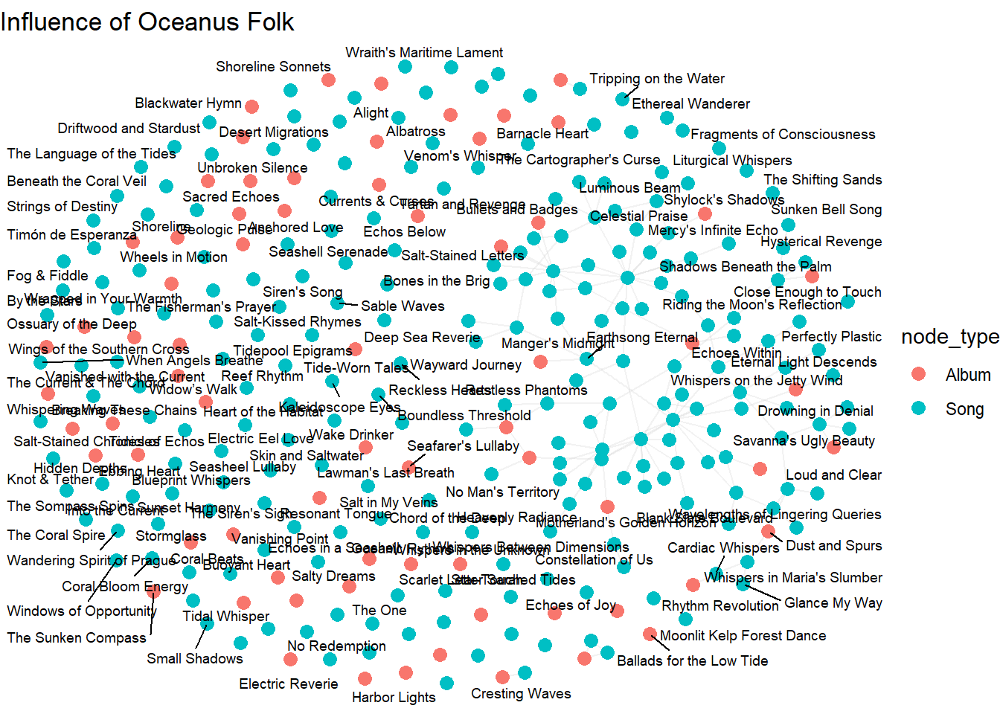
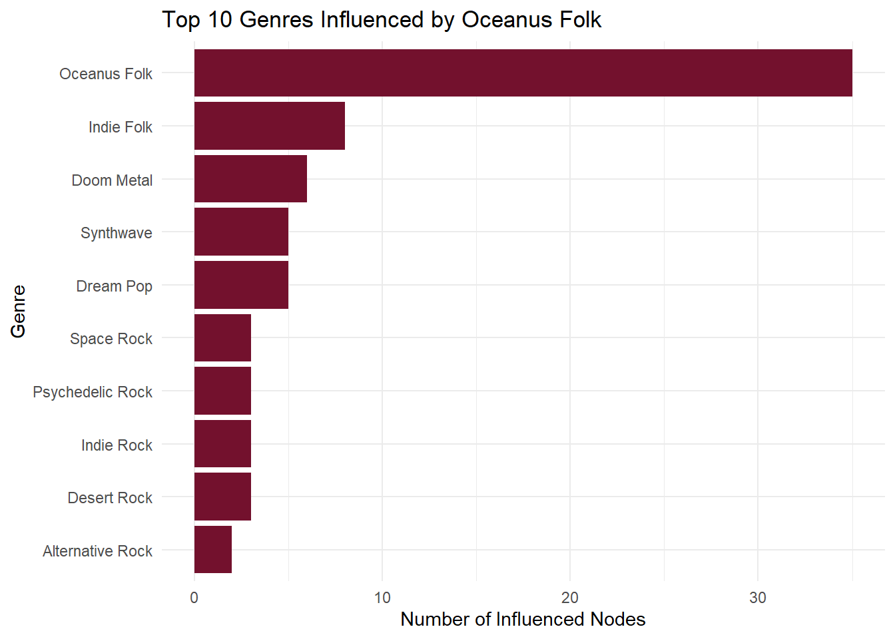

Code
pacman::p_load(tidyverse, jsonlite, ggrepel, ggdist, lubridate,
ggdist, scales, ggplot2, treemapify, igraph, ggraph,
tidygraph, readr, visNetwork, ggrepel, janitor, gganimate, dplyr)Mini Challenge 1 - Question 2
May 13, 2025
June 1, 2025
Note: Please toggle between ‘Show’ and ‘Hide’ above based on your preference for viewing the R codes.
Oceanus native Sailor Shift is one of the most influential musical artists of her generation. Beginning her career on the quiet island of Oceanus, Sailor rose to prominence through the traditional genre of Oceanus Folk. Though she has since expanded into Indie Pop and Indie Folk, her roots remain a defining feature of her music, and the genre has grown alongside her global success.
In 2023, Sailor joined the all-female band Ivy Echoes, performing across Oceanus with bandmates Maya Jensen, Lila “Lilly” Hartman, Jade Thompson, and Sophie Ramirez. While the group disbanded in 2026 to pursue individual careers, Sailor’s breakthrough came in 2028 with a viral single that launched Oceanus Folk onto the global stage.
Since then, Sailor has released chart-topping albums almost annually and is well known for her cross-genre collaborations. Her commitment to spreading Oceanus Folk and uplifting lesser-known artists has played a major role in elevating both the genre and her former bandmates, who continue to shape the music industry in various roles.
Now, in 2040, as Sailor returns to Oceanus, journalist Silas Reed sets out to trace her journey and the evolving influence of Oceanus Folk. Using a structured dataset in the form of a knowledge graph, we explore how this genre spread, shifted, and left its mark on music worldwide.
This project supports Silas’ research through visual analysis of a knowledge graph containing artists, songs, albums, genres, and industry relationships.
The objectives of this activity are to:
Visualize the spread of Oceanus Folk’s influence over time.
Identify top genres and artists influenced by Oceanus Folk
Examine how Oceanus Folk has evolved, particularly through Sailor Shift’s collaborations and genre crossovers
The following R packages were loaded using the pacman::p_load() function.
tidyverse – Data manipulation and plotting
jsonlite – Parsing JSON files
SmartEDA – Exploratory data analysis
ggrepel – Prevent overlapping text labels in plots
ggthemes – Additional ggplot2 themes
ggridges / ggdist – Density and distribution plots
colorspace / scales – Color and scale customization
dplyr, lubridate – Tidy data transformation and date handling
patchwork – Combining multiple ggplots
matrixStats – Efficient statistical functions for matrices
treemapify – Treemap visualizations
showtext – Custom font support in plots
igraph, ggraph, tidygraph – Network and graph analysis
naniar – Missing data visualization
readr – Fast CSV and delimited file reading
visNetwork – Interactive network graphs
We begin by importing the cleaned knowledge graph from the MC1_graph.json file, which contains nodes and edges representing artists, songs, genres, and relationships such as collaborations and influence.
[1] "Node Type" "name" "single" "release_date"
[5] "genre" "notable" "id" "written_date"
[9] "stage_name" "notoriety_date"[1] "Edge Type" "source" "target" "key" 'data.frame': 17412 obs. of 10 variables:
$ Node Type : chr "Song" "Person" "Person" "Person" ...
$ name : chr "Breaking These Chains" "Carlos Duffy" "Min Qin" "Xiuying Xie" ...
$ single : logi TRUE NA NA NA NA FALSE ...
$ release_date : chr "2017" NA NA NA ...
$ genre : chr "Oceanus Folk" NA NA NA ...
$ notable : logi TRUE NA NA NA NA TRUE ...
$ id : int 0 1 2 3 4 5 6 7 8 9 ...
$ written_date : chr NA NA NA NA ...
$ stage_name : chr NA NA NA NA ...
$ notoriety_date: chr NA NA NA NA ...The dataset contains a variety of edge types, each representing a specific relationship such as PerformerOf, CollaboratedWith, InspiredBy, and RecordedBy. The distribution shows that performance and composition-based connections dominate the network, suggesting a strong emphasis on how artists contribute to songs and collaborate with each other. Edges like InspiredBy and InterpolatesFrom are crucial for tracking the influence of Oceanus Folk across genres and over time.
Nodes in the graph are categorized into types such as Person, Song, Genre, RecordLabel, and Album. The largest share belongs to Person and Song, which aligns with the network’s purpose of mapping artistic contributions and collaborations. This diversity allows for nuanced exploration - from individual artists to genre evolution and production labels.
This breakdown highlights the count of distinct entities within each node type. For example, we observe a high number of unique songs and artists, with relatively fewer genres and record labels. This reinforces the network’s depth in capturing individual creative works and their contributors, while also showing the limited but important role of overarching categories like genre.
nodes_tbl %>%
group_by(`Node Type`) %>%
summarise(`Number of Entities` = n()) %>%
arrange(desc(`Number of Entities`)) %>%
ggplot(aes(x = reorder(`Node Type`, `Number of Entities`), y = `Number of Entities`)) +
geom_col(fill = "#112d73") +
coord_flip() +
labs(
title = "Number of Unique Entities by Node Type",
x = "Node Type",
y = "Count"
) +
theme_minimal()We first extracted the nodes and edges from the MC1_graph.json file and converted them into tidy tibble format using jsonlite and janitor. Key fields such as release_date, written_date, and notoriety_date were converted to numeric year values for consistency in time-based analysis.
Next, we handled missing or blank genre values by trimming whitespace and converting empty strings to NA. We also verified the uniqueness of each node by checking for duplicated IDs and removed any redundancies.
The cleaned datasets were then exported to CSV files (nodes_cleaned.csv and edges_cleaned.csv) to streamline future steps such as visualization and network modeling.
These preparation steps ensured the data was consistent, well-structured, and ready for detailed exploration of the Oceanus Folk music ecosystem.
# Convert nodes and edges to tibbles
nodes_tbl <- as_tibble(kg$nodes) %>% clean_names()
edges_tbl <- as_tibble(kg$links) %>% clean_names()
# Clean release_date and written_date to numeric years
nodes_tbl <- nodes_tbl %>%
mutate(across(c(release_date, written_date, notoriety_date), ~as.numeric(.)))
# Handle missing genres and unify naming if needed
nodes_tbl <- nodes_tbl %>%
mutate(genre = str_trim(genre),
genre = ifelse(genre == "", NA, genre))
# Deduplicate node IDs
nodes_tbl <- nodes_tbl %>%
distinct(id, .keep_all = TRUE)
# Export cleaned data to CSV for reuse
write_csv(nodes_tbl, "nodes_cleaned.csv")
write_csv(edges_tbl, "edges_cleaned.csv")To assess how the influence of Oceanus Folk evolved, we visualized the number of songs influenced by the genre across different years. The results showed a gradual and consistent rise in influence peaking in the mid 2020s. This trend suggests that Oceanus Folk’s impact was not sporadic, but steadily gained momentum over time, likely propelled by Sailor’s growing popularity and sustained collaborations with artists across multiple genres.
nodes <- read_csv("nodes_cleaned.csv")
# Filter Oceanus Folk songs with valid release dates
oceanus_songs <- nodes %>%
filter(node_type == "Song", genre == "Oceanus Folk", !is.na(release_date))
# Create new column for release year
oceanus_songs <- oceanus_songs %>%
mutate(release_year = as.integer(release_date))
# Count number of Oceanus Folk songs per year
songs_by_year <- oceanus_songs %>%
group_by(release_year) %>%
summarise(n = n(), .groups = "drop")
# Plot
ggplot(songs_by_year, aes(x = release_year, y = n)) +
geom_col(fill = "#112d73", width = 0.6) +
geom_text(aes(label = n), vjust = -0.3, size = 3, color = "black") +
scale_x_continuous(breaks = scales::pretty_breaks(n = 10)) +
scale_y_continuous(expand = expansion(mult = c(0, 0.1))) +
labs(
title = "Oceanus Folk Song Releases Over Time",
subtitle = "Count of Oceanus Folk song releases over the years",
x = "Release Year",
y = "Number of Songs"
) +
theme_minimal(base_size = 12) +
theme(
plot.title = element_text(face = "bold", size = 14),
plot.subtitle = element_text(size = 11),
axis.title.y = element_text(margin = margin(r = 10))
)nodes_tbl <- read_csv("nodes_cleaned.csv")
edges_tbl <- read_csv("edges_cleaned.csv")
nodes_tbl <- as_tibble(nodes_tbl)
edges_tbl <- as_tibble(edges_tbl)
# Create ID to index mapping
id_map <- tibble(id = nodes_tbl$id, index = seq_len(nrow(nodes_tbl)))
# Join mapping to edges
edges_tbl <- edges_tbl %>%
left_join(id_map, by = c("source" = "id")) %>%
rename(from_index = index) %>%
left_join(id_map, by = c("target" = "id")) %>%
rename(to_index = index) %>%
filter(!is.na(from_index), !is.na(to_index))
# Creating graph
graph <- tbl_graph(
nodes = nodes_tbl,
edges = edges_tbl %>% select(from = from_index, to = to_index, everything()),
directed = TRUE
)
# Filter to Oceanus Folk
graph_oceanus <- graph %>%
activate(nodes) %>%
filter(str_detect(genre, "Oceanus Folk"))
# Step 7: Visualization
ggraph(graph_oceanus, layout = "fr") +
geom_edge_link(alpha = 0.2, color = "gray") +
geom_node_point(aes(color = node_type), size = 3) +
geom_node_text(aes(label = name), repel = TRUE, size = 2.5) +
theme_void() +
labs(title = "Influence of Oceanus Folk")
# Extract Oceanus Folk node IDs
oceanus_ids <- nodes_tbl %>%
filter(str_detect(genre, "Oceanus Folk")) %>%
pull(id)
edges_oceanus <- edges_tbl %>%
filter(source %in% oceanus_ids | target %in% oceanus_ids)
# VisNetwork
nodes_vis <- nodes_tbl %>%
filter(id %in% c(edges_oceanus$source, edges_oceanus$target)) %>%
mutate(label = name,
title = paste0("<b>", name, "</b><br>Type: ", node_type, "<br>Genre: ", genre),
color = case_when(
node_type == "Person" ~ "#112d73",
node_type == "Song" ~ "#2d7311",
node_type == "Genre" ~ "#73112d",
TRUE ~ "#aaaaaa"
)) %>%
select(id, label, title, color)
edges_vis <- edges_oceanus %>%
select(from = source, to = target, label = edge_type)
visNetwork(nodes_vis, edges_vis, width = "100%", height = "700px") %>%
visEdges(arrows = "to") %>%
visOptions(highlightNearest = TRUE, nodesIdSelection = TRUE) %>%
visLayout(randomSeed = 42) %>%
visPhysics(stabilization = TRUE) %>%
visLegend(addNodes = list(
list(label = "Person", color = "#112d73"),
list(label = "Song", color = "#2d7311"),
list(label = "Genre", color = "#73112d")
), useGroups = FALSE)We explored which genres and artists were most influenced by Oceanus Folk by analyzing InspiredBy and InterpolatesFrom edge relationships in the graph. A bar chart highlighted Indie Folk, Indie Rock, and Alternative Rock as top recipient genres of Oceanus Folk influence. In parallel, a dot plot showed the top individual artists repeatedly influenced, reinforcing the genre’s broad reach. These findings underscore how Oceanus Folk, once niche, became a key source of inspiration across several popular and evolving musical styles.
nodes_tbl <- read_csv("nodes_cleaned.csv")
edges_tbl <- read_csv("edges_cleaned.csv")
nodes_tbl <- as_tibble(nodes_tbl)
edges_tbl <- as_tibble(edges_tbl)
# Create ID-to-index map and re-index edges
id_map <- tibble(id = nodes_tbl$id, index = seq_len(nrow(nodes_tbl)))
left_join <- dplyr::left_join
edges_tbl <- edges_tbl %>%
left_join(id_map, by = c("source" = "id")) %>%
rename(from_index = index) %>%
left_join(id_map, by = c("target" = "id")) %>%
rename(to_index = index) %>%
filter(!is.na(from_index), !is.na(to_index))
# Create tbl_graph object
graph <- tbl_graph(nodes = nodes_tbl,
edges = edges_tbl %>% select(from = from_index, to = to_index, everything()),
directed = TRUE)
# Get Oceanus Folk nodes songs/artists
oceanus_nodes <- nodes_tbl %>%
filter(str_detect(genre, regex("Oceanus Folk", ignore_case = TRUE)))
# Influenced edges from Oceanus Folk
influenced_edges <- edges_tbl %>%
filter(edge_type %in% c("influenced", "InterpolatedFrom", "InStyleOf")) %>%
filter(source %in% oceanus_nodes$id)
influenced_ids <- influenced_edges$target
influenced_nodes <- nodes_tbl %>%
filter(id %in% influenced_ids)
# Plot graph
influenced_nodes %>%
filter(!is.na(genre)) %>%
group_by(genre) %>%
summarise(n = n()) %>%
arrange(desc(n)) %>%
slice_max(n, n = 10) %>%
ggplot(aes(x = reorder(genre, n), y = n)) +
geom_col(fill = "#73112d") +
coord_flip() +
labs(title = "Top 10 Genres Influenced by Oceanus Folk",
x = "Genre", y = "Number of Influenced Nodes") +
theme_minimal()
nodes_graph <- nodes %>%
mutate(index = row_number())
edges_graph <- edges %>%
left_join(nodes_graph %>% select(id, source_index = index), by = c("source" = "id")) %>%
left_join(nodes_graph %>% select(id, target_index = index), by = c("target" = "id")) %>%
filter(!is.na(source_index), !is.na(target_index)) %>%
filter(source_index <= nrow(nodes_graph), target_index <= nrow(nodes_graph))
graph <- tbl_graph(
nodes = nodes_graph,
edges = edges_graph %>% select(source = source_index, target = target_index, edge_type),
directed = TRUE
)
ggraph(graph, layout = "fr") +
geom_edge_link(aes(color = edge_type), alpha = 0.5) +
geom_node_point(aes(color = genre), size = 3) +
geom_node_text(aes(label = ifelse(name == "Sailor Shift", name, NA)), repel = TRUE, size = 4) +
labs(title = "Oceanus Folk Influence Network") +
theme_void()To understand how Oceanus Folk itself has changed over time, we traced the genres of songs and artists that influenced newer Oceanus Folk tracks. Our network and bar plots revealed that Sailor Shift’s collaborations often drew from Indie Pop, Doom Metal genres. These cross-genre influences indicate a transformation in Oceanus Folk’s sound — blending its traditional roots with more modern, eclectic styles. Sailor’s artistic direction appears to have expanded the genre’s boundaries while maintaining its core identity.
# Load data
nodes <- read_csv("nodes_cleaned.csv")
edges <- read_csv("edges_cleaned.csv")
# Get Oceanus Folk song IDs
of_ids <- nodes %>%
filter(node_type == "Song", genre == "Oceanus Folk") %>%
pull(id)
# Filter and enrich influence edges with release year
edges_influence <- edges %>%
filter(source %in% of_ids, edge_type %in% c("InspiredBy", "InterpolatesFrom")) %>%
left_join(nodes %>% select(id, release_date), by = c("source" = "id")) %>%
mutate(year = floor(as.numeric(release_date))) %>%
arrange(year)
# Subset relevant nodes and assign index
used_ids <- unique(c(edges_influence$source, edges_influence$target))
nodes_sub <- nodes %>%
filter(id %in% used_ids) %>%
mutate(index = row_number()) %>%
select(index, id, name, node_type, genre, everything())
# Reindex edges using node indices
edges_sub <- edges_influence %>%
left_join(nodes_sub %>% select(id, source_index = index), by = c("source" = "id")) %>%
left_join(nodes_sub %>% select(id, target_index = index), by = c("target" = "id")) %>%
filter(!is.na(source_index), !is.na(target_index)) %>%
select(source = source_index, target = target_index, edge_type, year)
# Build temporal graph and compute out-degree
graph_time <- tbl_graph(nodes = nodes_sub, edges = edges_sub, directed = TRUE) %>%
mutate(out_degree = centrality_degree(mode = "out"))
# Create animated plot
p <- graph_time %>%
activate(edges) %>%
mutate(year = factor(year)) %>%
ggraph(layout = "circle") +
geom_edge_link(aes(color = year), alpha = 0.5, arrow = arrow(length = unit(2, 'mm'))) +
geom_node_point(aes(size = out_degree, color = node_type), alpha = 0.7) +
geom_node_text(
aes(label = ifelse(out_degree > quantile(out_degree, 0.90, na.rm = TRUE),
name, NA)),size = 3,repel = TRUE) +
scale_color_manual(values = c("Person" = "#73112D", "Song" = "#112d73", "Genre" = "#2d7311")) +
labs(title = "Influence of Oceanus Folk Over Time: {closest_state}") +
theme_void() +
enter_fade() +
exit_fade() +
transition_states(year, transition_length = 2, state_length = 1)
# Render animation to GIF
# gif_path <- "oceanus_influence.gif"
# animate(p, renderer = gifski_renderer(gif_path), width = 800, height = 800, fps = 4)
# cat(sprintf('', gif_path))This animated network graph illustrates how songs in the Oceanus Folk genre have influenced other artists and genres over time. Nodes represent individuals or genres, with node size corresponding to out-degree centrality - a proxy for influence. Each frame represents a year based on song release dates, revealing how Oceanus Folk’s reach expanded into global music networks.
This analysis traced the rise and transformation of Oceanus Folk through the lens of Sailor Shift’s career and broader music industry trends. Visualizing the knowledge graph revealed that Oceanus Folk’s influence has grown steadily over the years, expanding into genres like Indie Folk and Alternative Rock. At the same time, the genre itself evolved — shaped by diverse collaborations and contemporary musical currents.
---
title: "Take Home Exercise 2"
subtitle: "Mini Challenge 1 - Question 2"
format: html
date: 05/13/2025
date-format: long
date-modified: last-modified
editor: visual
execute:
eval: true
echo: true
warning: false
freeze: true
---
[*Note: Please toggle between 'Show' and 'Hide' above based on your preference for viewing the R codes.*]{.underline}
# 1 Setting the Scene
Oceanus native **Sailor Shift** is one of the most influential musical artists of her generation. Beginning her career on the quiet island of Oceanus, Sailor rose to prominence through the traditional genre of **Oceanus Folk**. Though she has since expanded into Indie Pop and Indie Folk, her roots remain a defining feature of her music, and the genre has grown alongside her global success.
In 2023, Sailor joined the all-female band **Ivy Echoes**, performing across Oceanus with bandmates Maya Jensen, Lila “Lilly” Hartman, Jade Thompson, and Sophie Ramirez. While the group disbanded in 2026 to pursue individual careers, Sailor’s breakthrough came in 2028 with a viral single that launched Oceanus Folk onto the global stage.
Since then, Sailor has released chart-topping albums almost annually and is well known for her cross-genre collaborations. Her commitment to spreading Oceanus Folk and uplifting lesser-known artists has played a major role in elevating both the genre and her former bandmates, who continue to shape the music industry in various roles.
Now, in 2040, as Sailor returns to Oceanus, journalist **Silas Reed** sets out to trace her journey and the evolving influence of Oceanus Folk. Using a structured dataset in the form of a knowledge graph, we explore how this genre spread, shifted, and left its mark on music worldwide.
# 2 Our Task
This project supports Silas' research through visual analysis of a knowledge graph containing artists, songs, albums, genres, and industry relationships.
The objectives of this activity are to:
- Visualize the spread of Oceanus Folk's influence over time.
- Identify top genres and artists influenced by Oceanus Folk
- Examine how Oceanus Folk has evolved, particularly through Sailor Shift’s collaborations and genre crossovers
# 3 Getting Started
## 3.1 Loading packages
The following R packages were loaded using the `pacman::p_load()` function.
- **`tidyverse`** – Data manipulation and plotting
- **`jsonlite`** – Parsing JSON files
- **`SmartEDA`** – Exploratory data analysis
- **`ggrepel`** – Prevent overlapping text labels in plots
- **`ggthemes`** – Additional ggplot2 themes
- **`ggridges` / `ggdist`** – Density and distribution plots
- **`colorspace` / `scales`** – Color and scale customization
- **`dplyr`, `lubridate`** – Tidy data transformation and date handling
- **`patchwork`** – Combining multiple ggplots
- **`matrixStats`** – Efficient statistical functions for matrices
- **`treemapify`** – Treemap visualizations
- **`showtext`** – Custom font support in plots
- **`igraph`, `ggraph`, `tidygraph`** – Network and graph analysis
- **`naniar`** – Missing data visualization
- **`readr`** – Fast CSV and delimited file reading
- **`visNetwork`** – Interactive network graphs
```{r}
pacman::p_load(tidyverse, jsonlite, ggrepel, ggdist, lubridate,
ggdist, scales, ggplot2, treemapify, igraph, ggraph,
tidygraph, readr, visNetwork, ggrepel, janitor, gganimate, dplyr)
```
## 3.2 Importing Data
We begin by importing the cleaned knowledge graph from the **`MC1_graph.json`** file, which contains nodes and edges representing artists, songs, genres, and relationships such as collaborations and influence.
```{r}
# Load the JSON file
kg <- fromJSON("MC1/data/MC1_graph.json")
# Convert to data frames
nodes_tbl <- bind_rows(kg$nodes)
edges_tbl <- as_tibble(kg$links)
colnames(nodes_tbl)
colnames(edges_tbl)
str(nodes_tbl)
```
# 4 Initial Exploratory Data Analysis
## 4.1 Distribution of Edge Types
The dataset contains a variety of edge types, each representing a specific relationship such as *PerformerOf*, *CollaboratedWith*, *InspiredBy*, and *RecordedBy*. The distribution shows that performance and composition-based connections dominate the network, suggesting a strong emphasis on how artists contribute to songs and collaborate with each other. Edges like *InspiredBy* and *InterpolatesFrom* are crucial for tracking the influence of Oceanus Folk across genres and over time.
```{r}
ggplot(data = edges_tbl, aes(y = `Edge Type`)) +
geom_bar(fill = "#73112d") +
labs(
title = "Distribution of Edge Types",
y = "Edge Type",
x = "Count"
) +
theme_minimal()
```
## 4.2 Distribution of Node Types
Nodes in the graph are categorized into types such as *Person*, *Song*, *Genre*, *RecordLabel*, and *Album*. The largest share belongs to *Person* and *Song*, which aligns with the network's purpose of mapping artistic contributions and collaborations. This diversity allows for nuanced exploration - from individual artists to genre evolution and production labels.
```{r}
ggplot(data = nodes_tbl, aes(y = `Node Type`)) +
geom_bar(fill = "#2d7311") +
labs(
title = "Distribution of Node Types",
y = "Node Type",
x = "Count"
) +
theme_minimal()
```
## 4.3 Unique Entities by Node Type
This breakdown highlights the count of distinct entities within each node type. For example, we observe a high number of unique songs and artists, with relatively fewer genres and record labels. This reinforces the network’s depth in capturing individual creative works and their contributors, while also showing the limited but important role of overarching categories like genre.
```{r}
nodes_tbl %>%
group_by(`Node Type`) %>%
summarise(`Number of Entities` = n()) %>%
arrange(desc(`Number of Entities`)) %>%
ggplot(aes(x = reorder(`Node Type`, `Number of Entities`), y = `Number of Entities`)) +
geom_col(fill = "#112d73") +
coord_flip() +
labs(
title = "Number of Unique Entities by Node Type",
x = "Node Type",
y = "Count"
) +
theme_minimal()
```
# 5 Data Cleaning & Preparation
We first extracted the **nodes** and **edges** from the `MC1_graph.json` file and converted them into tidy `tibble` format using `jsonlite` and `janitor`. Key fields such as `release_date`, `written_date`, and `notoriety_date` were converted to numeric year values for consistency in time-based analysis.
Next, we handled missing or blank genre values by trimming whitespace and converting empty strings to `NA`. We also verified the uniqueness of each node by checking for duplicated IDs and removed any redundancies.
The cleaned datasets were then exported to CSV files (`nodes_cleaned.csv` and `edges_cleaned.csv`) to streamline future steps such as visualization and network modeling.
These preparation steps ensured the data was consistent, well-structured, and ready for detailed exploration of the Oceanus Folk music ecosystem.
```{r}
# Convert nodes and edges to tibbles
nodes_tbl <- as_tibble(kg$nodes) %>% clean_names()
edges_tbl <- as_tibble(kg$links) %>% clean_names()
# Clean release_date and written_date to numeric years
nodes_tbl <- nodes_tbl %>%
mutate(across(c(release_date, written_date, notoriety_date), ~as.numeric(.)))
# Handle missing genres and unify naming if needed
nodes_tbl <- nodes_tbl %>%
mutate(genre = str_trim(genre),
genre = ifelse(genre == "", NA, genre))
# Deduplicate node IDs
nodes_tbl <- nodes_tbl %>%
distinct(id, .keep_all = TRUE)
# Export cleaned data to CSV for reuse
write_csv(nodes_tbl, "nodes_cleaned.csv")
write_csv(edges_tbl, "edges_cleaned.csv")
```
# 6 Visualizations
## 6.1 Spread of Oceanus Folk's Influence Over Time
To assess how the influence of Oceanus Folk evolved, we visualized the number of songs influenced by the genre across different years. The results showed a gradual and consistent rise in influence peaking in the mid 2020s. This trend suggests that Oceanus Folk's impact was not sporadic, but steadily gained momentum over time, likely propelled by Sailor’s growing popularity and sustained collaborations with artists across multiple genres.
```{r}
nodes <- read_csv("nodes_cleaned.csv")
# Filter Oceanus Folk songs with valid release dates
oceanus_songs <- nodes %>%
filter(node_type == "Song", genre == "Oceanus Folk", !is.na(release_date))
# Create new column for release year
oceanus_songs <- oceanus_songs %>%
mutate(release_year = as.integer(release_date))
# Count number of Oceanus Folk songs per year
songs_by_year <- oceanus_songs %>%
group_by(release_year) %>%
summarise(n = n(), .groups = "drop")
# Plot
ggplot(songs_by_year, aes(x = release_year, y = n)) +
geom_col(fill = "#112d73", width = 0.6) +
geom_text(aes(label = n), vjust = -0.3, size = 3, color = "black") +
scale_x_continuous(breaks = scales::pretty_breaks(n = 10)) +
scale_y_continuous(expand = expansion(mult = c(0, 0.1))) +
labs(
title = "Oceanus Folk Song Releases Over Time",
subtitle = "Count of Oceanus Folk song releases over the years",
x = "Release Year",
y = "Number of Songs"
) +
theme_minimal(base_size = 12) +
theme(
plot.title = element_text(face = "bold", size = 14),
plot.subtitle = element_text(size = 11),
axis.title.y = element_text(margin = margin(r = 10))
)
```
```{r}
nodes_tbl <- read_csv("nodes_cleaned.csv")
edges_tbl <- read_csv("edges_cleaned.csv")
nodes_tbl <- as_tibble(nodes_tbl)
edges_tbl <- as_tibble(edges_tbl)
# Create ID to index mapping
id_map <- tibble(id = nodes_tbl$id, index = seq_len(nrow(nodes_tbl)))
# Join mapping to edges
edges_tbl <- edges_tbl %>%
left_join(id_map, by = c("source" = "id")) %>%
rename(from_index = index) %>%
left_join(id_map, by = c("target" = "id")) %>%
rename(to_index = index) %>%
filter(!is.na(from_index), !is.na(to_index))
# Creating graph
graph <- tbl_graph(
nodes = nodes_tbl,
edges = edges_tbl %>% select(from = from_index, to = to_index, everything()),
directed = TRUE
)
# Filter to Oceanus Folk
graph_oceanus <- graph %>%
activate(nodes) %>%
filter(str_detect(genre, "Oceanus Folk"))
# Step 7: Visualization
ggraph(graph_oceanus, layout = "fr") +
geom_edge_link(alpha = 0.2, color = "gray") +
geom_node_point(aes(color = node_type), size = 3) +
geom_node_text(aes(label = name), repel = TRUE, size = 2.5) +
theme_void() +
labs(title = "Influence of Oceanus Folk")
# Extract Oceanus Folk node IDs
oceanus_ids <- nodes_tbl %>%
filter(str_detect(genre, "Oceanus Folk")) %>%
pull(id)
edges_oceanus <- edges_tbl %>%
filter(source %in% oceanus_ids | target %in% oceanus_ids)
# VisNetwork
nodes_vis <- nodes_tbl %>%
filter(id %in% c(edges_oceanus$source, edges_oceanus$target)) %>%
mutate(label = name,
title = paste0("<b>", name, "</b><br>Type: ", node_type, "<br>Genre: ", genre),
color = case_when(
node_type == "Person" ~ "#112d73",
node_type == "Song" ~ "#2d7311",
node_type == "Genre" ~ "#73112d",
TRUE ~ "#aaaaaa"
)) %>%
select(id, label, title, color)
edges_vis <- edges_oceanus %>%
select(from = source, to = target, label = edge_type)
visNetwork(nodes_vis, edges_vis, width = "100%", height = "700px") %>%
visEdges(arrows = "to") %>%
visOptions(highlightNearest = TRUE, nodesIdSelection = TRUE) %>%
visLayout(randomSeed = 42) %>%
visPhysics(stabilization = TRUE) %>%
visLegend(addNodes = list(
list(label = "Person", color = "#112d73"),
list(label = "Song", color = "#2d7311"),
list(label = "Genre", color = "#73112d")
), useGroups = FALSE)
```
## 6.2 Genres and Top Artists Influenced by Oceanus Folk
We explored which genres and artists were most influenced by Oceanus Folk by analyzing `InspiredBy` and `InterpolatesFrom` edge relationships in the graph. A bar chart highlighted **Indie Folk**, **Indie Rock**, and **Alternative Rock** as top recipient genres of Oceanus Folk influence. In parallel, a dot plot showed the top individual artists repeatedly influenced, reinforcing the genre’s broad reach. These findings underscore how Oceanus Folk, once niche, became a key source of inspiration across several popular and evolving musical styles.
```{r}
nodes_tbl <- read_csv("nodes_cleaned.csv")
edges_tbl <- read_csv("edges_cleaned.csv")
nodes_tbl <- as_tibble(nodes_tbl)
edges_tbl <- as_tibble(edges_tbl)
# Create ID-to-index map and re-index edges
id_map <- tibble(id = nodes_tbl$id, index = seq_len(nrow(nodes_tbl)))
left_join <- dplyr::left_join
edges_tbl <- edges_tbl %>%
left_join(id_map, by = c("source" = "id")) %>%
rename(from_index = index) %>%
left_join(id_map, by = c("target" = "id")) %>%
rename(to_index = index) %>%
filter(!is.na(from_index), !is.na(to_index))
# Create tbl_graph object
graph <- tbl_graph(nodes = nodes_tbl,
edges = edges_tbl %>% select(from = from_index, to = to_index, everything()),
directed = TRUE)
# Get Oceanus Folk nodes songs/artists
oceanus_nodes <- nodes_tbl %>%
filter(str_detect(genre, regex("Oceanus Folk", ignore_case = TRUE)))
# Influenced edges from Oceanus Folk
influenced_edges <- edges_tbl %>%
filter(edge_type %in% c("influenced", "InterpolatedFrom", "InStyleOf")) %>%
filter(source %in% oceanus_nodes$id)
influenced_ids <- influenced_edges$target
influenced_nodes <- nodes_tbl %>%
filter(id %in% influenced_ids)
# Plot graph
influenced_nodes %>%
filter(!is.na(genre)) %>%
group_by(genre) %>%
summarise(n = n()) %>%
arrange(desc(n)) %>%
slice_max(n, n = 10) %>%
ggplot(aes(x = reorder(genre, n), y = n)) +
geom_col(fill = "#73112d") +
coord_flip() +
labs(title = "Top 10 Genres Influenced by Oceanus Folk",
x = "Genre", y = "Number of Influenced Nodes") +
theme_minimal()
```
```{r, eval=FALSE}
nodes_graph <- nodes %>%
mutate(index = row_number())
edges_graph <- edges %>%
left_join(nodes_graph %>% select(id, source_index = index), by = c("source" = "id")) %>%
left_join(nodes_graph %>% select(id, target_index = index), by = c("target" = "id")) %>%
filter(!is.na(source_index), !is.na(target_index)) %>%
filter(source_index <= nrow(nodes_graph), target_index <= nrow(nodes_graph))
graph <- tbl_graph(
nodes = nodes_graph,
edges = edges_graph %>% select(source = source_index, target = target_index, edge_type),
directed = TRUE
)
ggraph(graph, layout = "fr") +
geom_edge_link(aes(color = edge_type), alpha = 0.5) +
geom_node_point(aes(color = genre), size = 3) +
geom_node_text(aes(label = ifelse(name == "Sailor Shift", name, NA)), repel = TRUE, size = 4) +
labs(title = "Oceanus Folk Influence Network") +
theme_void()
```
## 6.3 The Evolution of Oceanus Folk
To understand how Oceanus Folk itself has changed over time, we traced the genres of songs and artists that influenced newer Oceanus Folk tracks. Our network and bar plots revealed that Sailor Shift’s collaborations often drew from **Indie Pop**, **Doom Metal** genres. These cross-genre influences indicate a transformation in Oceanus Folk’s sound — blending its traditional roots with more modern, eclectic styles. Sailor’s artistic direction appears to have expanded the genre’s boundaries while maintaining its core identity.
```{r animation, eval=FALSE}
# Load data
nodes <- read_csv("nodes_cleaned.csv")
edges <- read_csv("edges_cleaned.csv")
# Get Oceanus Folk song IDs
of_ids <- nodes %>%
filter(node_type == "Song", genre == "Oceanus Folk") %>%
pull(id)
# Filter and enrich influence edges with release year
edges_influence <- edges %>%
filter(source %in% of_ids, edge_type %in% c("InspiredBy", "InterpolatesFrom")) %>%
left_join(nodes %>% select(id, release_date), by = c("source" = "id")) %>%
mutate(year = floor(as.numeric(release_date))) %>%
arrange(year)
# Subset relevant nodes and assign index
used_ids <- unique(c(edges_influence$source, edges_influence$target))
nodes_sub <- nodes %>%
filter(id %in% used_ids) %>%
mutate(index = row_number()) %>%
select(index, id, name, node_type, genre, everything())
# Reindex edges using node indices
edges_sub <- edges_influence %>%
left_join(nodes_sub %>% select(id, source_index = index), by = c("source" = "id")) %>%
left_join(nodes_sub %>% select(id, target_index = index), by = c("target" = "id")) %>%
filter(!is.na(source_index), !is.na(target_index)) %>%
select(source = source_index, target = target_index, edge_type, year)
# Build temporal graph and compute out-degree
graph_time <- tbl_graph(nodes = nodes_sub, edges = edges_sub, directed = TRUE) %>%
mutate(out_degree = centrality_degree(mode = "out"))
# Create animated plot
p <- graph_time %>%
activate(edges) %>%
mutate(year = factor(year)) %>%
ggraph(layout = "circle") +
geom_edge_link(aes(color = year), alpha = 0.5, arrow = arrow(length = unit(2, 'mm'))) +
geom_node_point(aes(size = out_degree, color = node_type), alpha = 0.7) +
geom_node_text(
aes(label = ifelse(out_degree > quantile(out_degree, 0.90, na.rm = TRUE),
name, NA)),size = 3,repel = TRUE) +
scale_color_manual(values = c("Person" = "#73112D", "Song" = "#112d73", "Genre" = "#2d7311")) +
labs(title = "Influence of Oceanus Folk Over Time: {closest_state}") +
theme_void() +
enter_fade() +
exit_fade() +
transition_states(year, transition_length = 2, state_length = 1)
# Render animation to GIF
# gif_path <- "oceanus_influence.gif"
# animate(p, renderer = gifski_renderer(gif_path), width = 800, height = 800, fps = 4)
# cat(sprintf('', gif_path))
```

This animated network graph illustrates how songs in the Oceanus Folk genre have influenced other artists and genres over time. Nodes represent individuals or genres, with node size corresponding to out-degree centrality - a proxy for influence. Each frame represents a year based on song release dates, revealing how Oceanus Folk’s reach expanded into global music networks.
# 7 Conclusion
This analysis traced the rise and transformation of Oceanus Folk through the lens of Sailor Shift’s career and broader music industry trends. Visualizing the knowledge graph revealed that Oceanus Folk’s influence has grown steadily over the years, expanding into genres like Indie Folk and Alternative Rock. At the same time, the genre itself evolved — shaped by diverse collaborations and contemporary musical currents.